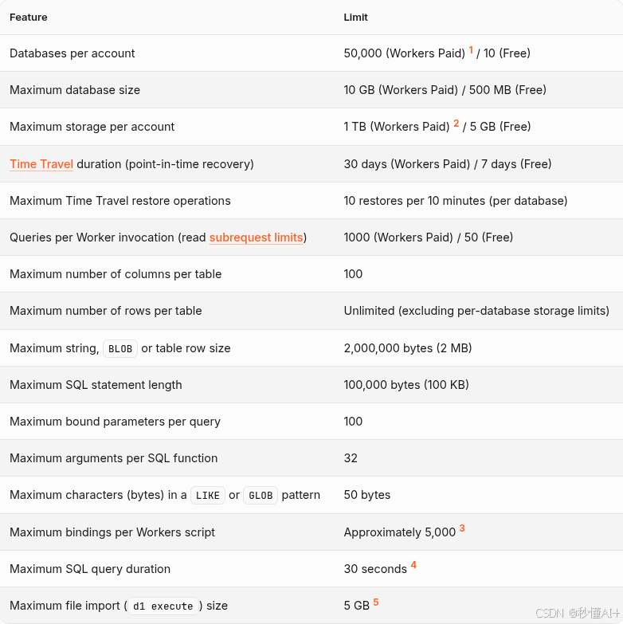
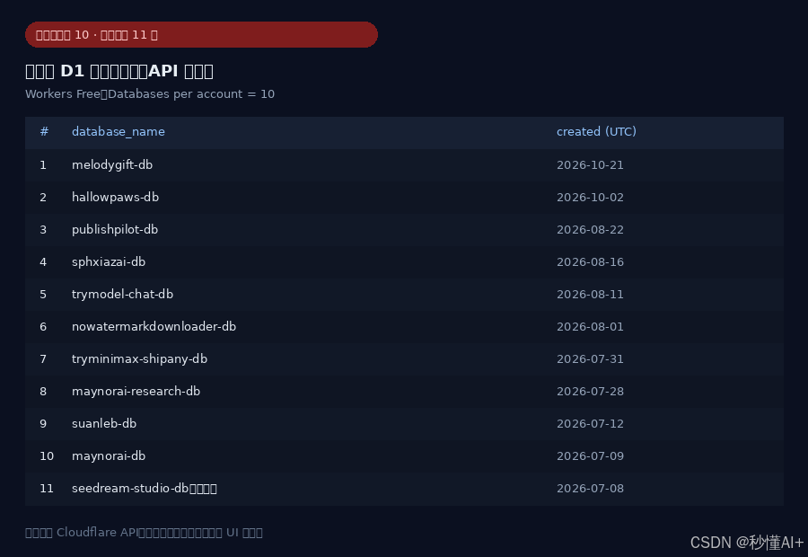
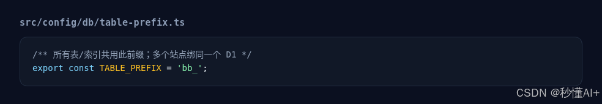
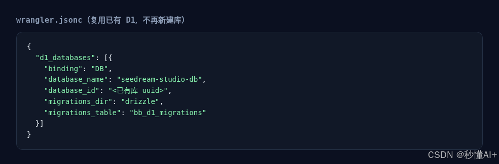
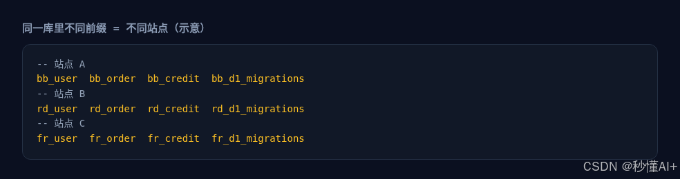

免费 Cloudflare 只有 10 个 D1？满了之后的「穷鬼打法」：表前缀复用同一个库
上新站的时候，最容易踩的坑之一是：Workers 免费档，每个账号最多只能建 10 个 D1 数据库。
官方 limits 写得很清楚：Databases per account —— Paid 很多，Free 就是 10。

（图注：Cloudflare D1 官方限额：免费档最多 10 个数据库）
满了之后长什么样
额度一满，再想给新项目「新建一个 D1」就会直接卡住。预览/部署侧常见提示大概是这样：当前账号 D1 免费额度已满（例如已经有 11 个库），没法再 create；KV / R2 / Queues 可能都备好了，就差这一步。
（图注：D1 免费额度已满、无法新建库的提示）
用 API 把账号里现有的库拉出来，一眼就能看到已经顶满（本例 11 个，共享业务库是 shared-app-db）：

（图注：本账号 D1 列表（API 实拉））
这时候有两条路：
- 删掉 1～2 个不用的库，或者升级 Workers Paid
- 穷鬼打法：不再新建库，多个站点共用同一个 D1，用表名前缀把数据隔开
下面讲第 2 条。
穷鬼打法：一个 D1，多个前缀
核心就一句话：
库还是那一个；每个站点给自己的表加固定前缀（
bb_、rd_、fr_……），迁移表也用各自的*_d1_migrations。
这样：
- 不占用新的「数据库名额」（还是 1 个 D1，算进那 10 个里的同一个）
- 站点之间表不撞名
- 每个 Worker 仍然
binding: "DB"指到同一database_id
1）改表前缀
项目里通常有一个很小的配置文件，例如：

（图注：TABLE_PREFIX 配置示例）
/** 所有表/索引共用此前缀；多个站点绑同一个 D1 */
export const TABLE_PREFIX = 'bb_';
换站点就换前缀：rd_、fr_、jp_……一个前缀对应一个产品，别复用。
2）Wrangler 复用已有库，而不是 create
新建站时，不要再跑「创建 new D1」。直接把 d1_databases 指到已经存在的那一个，并指定本站自己的 migrations 表：

（图注：wrangler 复用已有 D1 配置）
{
"d1_databases": [{
"binding": "DB",
"database_name": "shared-app-db",
"database_id": "<已有库 uuid>",
"migrations_dir": "drizzle",
"migrations_table": "bb_d1_migrations"
}]
}
注意两点：
database_id用已有库的 UUIDmigrations_table必须带本站前缀（bb_d1_migrations/rd_d1_migrations……），否则多家迁移会互相踩
3）同一库里看起来像这样
共享库里会并存多套「平行宇宙」表（示意）：

（图注：同一 D1 内多套前缀表示意）
-- 站点 A
bb_user bb_order bb_credit bb_d1_migrations
-- 站点 B
rd_user rd_order rd_credit rd_d1_migrations
-- 站点 C
fr_user fr_order fr_credit fr_d1_migrations
实际能撑多少站？
免费档限制的是 「数据库个数」，不是「表的个数」。
所以理论上：1 个共享 D1 × N 个前缀 ≈ N 个站点的业务表，仍然只占 1 个名额。
我们这边就是这个路数：账号 D1 列表已经顶满免费档，新站继续绑同一个共享库、换前缀上线——不是鼓励大家永远不升级，而是额度卡住时还能继续发版。 模型侧调用的话，我平时会顺手走 tryallapi.com 这类聚合接口，和「库满了换前缀」是两件独立的事，互不耽误。
注意事项（别省出事故）
- 前缀一定要全局唯一，两个站共用
bb_等于两套业务写同一批表。 - migrations_table 也要带前缀，否则 migration 历史串台。
- 共享库有 整库 500MB（Free） 和账号存储上限；站多了要盯容量，不是无限囤。
- 当天 row read / row write 免费额度是账号级的，站一多更容易顶满——这和「库个数」是另一道墙。
- 备份 / Time Travel / 误删风险：共用库，操作前看清楚前缀。
- 真要隔离合规或大流量，该升级 Paid、该拆库还是拆；穷鬼打法是过渡方案。
小结
| 做法 | 效果 |
|---|---|
| 每站新建一个 D1 | 免费档最多约 10 站就顶满 |
| 删库 / 升级 Paid | 合规、省心，但要动手或花钱 |
| 表前缀 + 复用同一 D1 | 不占新名额，继续上站 |
所以：免费 CF 只有 10 个 D1 时，满了怎么办？
别再 create 了——给表加前缀，挤进同一个库。这就是穷鬼打法。